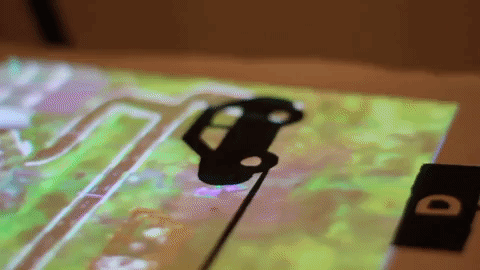
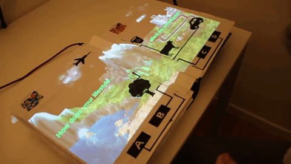
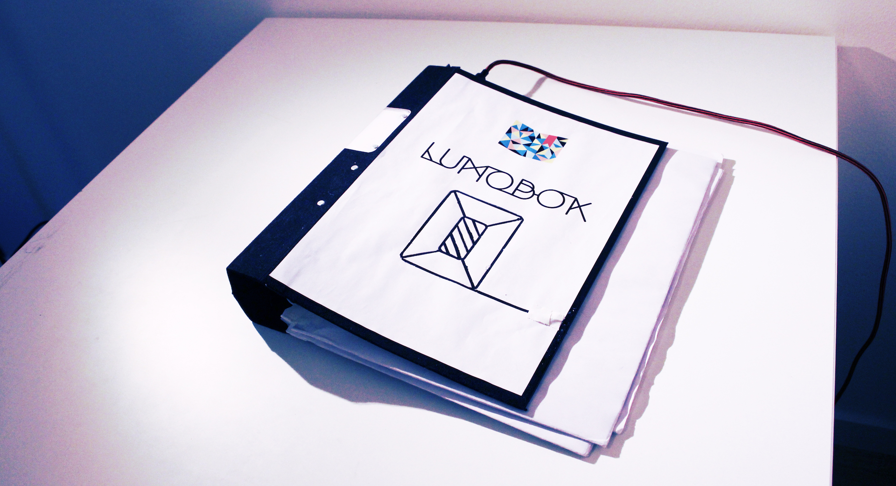
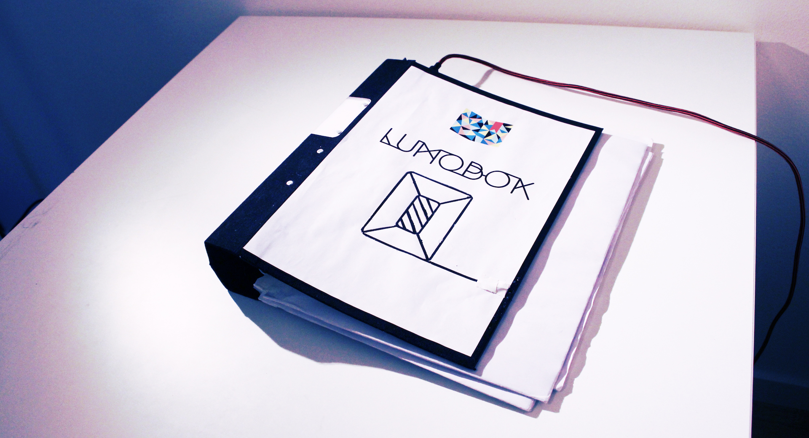

LUMOBOK
An interactive augmented book
Keywords: interaction design, projection mapping, augmented reality
Lumobok is an augmented interactive book meant to create collaborative, playful and meaningful interaction. The prototype is the outcome of the final project for the Multimodal Interaction and Interfaces course at KTH.
We redefined a familiar storytelling object - the book, by enhancing its experience through projected 2D visuals, haptic interactions and sound feedback. Dynamic unique content can be displayed on each page. The example shown is a collection of mini-games and quizzes about environmental sustainability. The content of the book hasn't been chosen randomly. With the ever growing need of bringing awareness and engaging people in sustainability-related issues, we found this project the best opportunity to familiarize many with these issues and show them in a playful way how much impact each of us has on our environment.

Signals from the analog triggers of conductive ink were connected to copper tape and subsequently digitized in a microcontroller to generate visual and audio content. From within Unity, content creation, marker tracking and projection took place. The six pages of content include an introductory cover, a multiple choice quiz, a multiplayer game and a lifestyle quiz with corresponding responsive landscape.
Issues of automatic page identification by marker tracking were encountered, and solutions are proposed in the report, but these could be subject for further investigation. However, internal evaluation of the final prototype of the Lumobok demonstrates a fully usable, playful and engaging multimodal interface.
This project was designed and developed by Patricia Ciobanu, Sonia Camacho, Andreas Almqvist and Nadia Campo Woytuk.
 

Lumobok was nominated for C Awards in 2018.